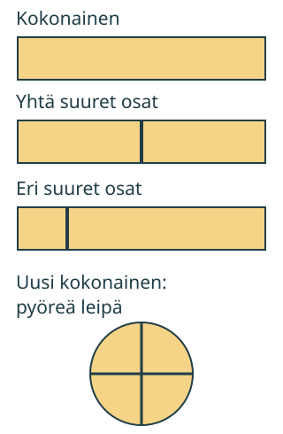

<link rel="stylesheet" href="lesson.css" />


<section data-teaching-step="1" data-lesson-role="teaching-step">
<section class="lesson-intro">
  
  <h2>Yhtä paljon kummallekin</h2>
  <p>Aava jakaa yhden leivän Loikan kanssa. Mihin jakoviiva tulee, jotta kumpikin saa yhtä paljon?</p>
  <p><strong>Harjoittelen jakamaan kokonaisen yhtä suuriin osiin.</strong></p>
</section>
</section>


<section>
  
<section data-teaching-step="2" data-lesson-role="teaching-step">
<h2>Kokonainen ja sen osat</h2>
  <p>Ota paperisuikale. Se on nyt kokonainen. Taita päät vastakkain ja avaa paperi. Taitos näyttää jakokohdan.</p>
  <figure data-frac-figure data-lesson-role="worked-example"><figcaption>Vertaamme saman kokonaisen osia. Paperi esittää tässä tasapaksua leipää.</figcaption></figure>
</section>

  
<section data-teaching-step="3" data-lesson-role="teaching-step">
<h3>Esimerkki: keskeltä kahtia</h3>
  <p>Keskellä oleva viiva tekee kaksi yhtä suurta osaa. Kun taitat ne päällekkäin, reunat osuvat yhteen. Yksi osa on puolikas.</p>
</section>

  
<section data-teaching-step="4" data-lesson-role="teaching-step">
<h3>Esimerkki: kaksi ei vielä riitä</h3>
  <p>Sivuun tehty viiva tekee myös kaksi osaa. Toinen jää pieneksi. Palojen laskeminen ei siis kerro, saavatko molemmat yhtä paljon.</p>
</section>

  
<section data-teaching-step="5" data-lesson-role="teaching-step">
<h3>Uusi tilanne: pyöreä leipä</h3>
  <p>Myös pyöreä leipä voi olla kokonainen. Keskeltä ristiin jakamalla saadaan neljä yhtä suurta palaa. Pelkkä neljä palaa ei riitä: koon pitää olla sama.</p>
</section>

</section>


<section data-teaching-step="6" data-lesson-role="teaching-step">
<section data-frac-work><h2>Tee jako itse</h2><div data-audience-columns><div data-visual-column><p data-frac-instruction>Jaa suikale kahteen yhtä suureen osaan. Lisää jakoviiva valitsemaasi kohtaan.</p>
<div data-frac-picture></div>
<div data-frac-compare></div></div><div data-response-column><p> <button type="button" data-frac-task="2">Jaa kahdelle</button> <button type="button" data-frac-task="3">Jaa kolmelle</button></p><p>Numerot nimeävät vain viivan paikan. Lisää tai poista viiva:</p>
<p data-frac-cuts><button type="button" data-frac-cut="1" aria-pressed="false">Viiva 1</button> <button type="button" data-frac-cut="2" aria-pressed="false">Viiva 2</button> <button type="button" data-frac-cut="3" aria-pressed="false">Viiva 3</button> <button type="button" data-frac-cut="4" aria-pressed="false">Viiva 4</button> <button type="button" data-frac-cut="5" aria-pressed="false">Viiva 5</button></p>
<p><button type="button" data-frac-check>Tarkista jako</button> <button type="button" data-frac-clear>Poista viivat</button></p>
<p data-frac-feedback role="status" aria-live="polite">Saat kokeilla rauhassa. Tarkistus vertaa sekä osien määrää että kokoa.</p>
<details data-lesson-role="hint"><summary>Apua</summary><p>Etsi ensin kokonaisen molemmat päät. Kahdelle tarvitaan yksi viiva keskelle. Kolmelle tarvitaan kaksi viivaa niin, että kaikki kolme väliä ovat yhtä pitkät. Katso myös päätyosat.</p></details><details data-lesson-role="worked-example"><summary>Tutki reunajaon mallia</summary><p>Ennusta ensin: jos jakoviiva on lähellä reunaa, ovatko molemmat osat yhtä suuria? Katso sitten <strong>Näytä reunajako</strong>.</p><button type="button" data-frac-demo>Näytä reunajako</button></details></div></div></section>
</section>


<section data-teaching-step="7" data-lesson-role="teaching-step">
<details data-lesson-role="teaching-step"><summary>Lisätutkimus</summary><p>Jaa neliöpaperi kahteen yhtä suureen osaan kulmasta vastakkaiseen kulmaan. Voitko tehdä yhtä suuren jaon myös reunojen keskikohtien kautta? Käännä ja vertaa osia. Tässä koon vertailu ei tarkoita vain samanlaista suikaletta.</p></details>
</section>


<details class="teacher" data-lesson-role="teacher-note"><summary>Opettajalle: kokeilu ja rajat</summary><p>Vuosiluokat 1–2. Näytä kokonainen ennen jakoa. Käytä samanlevyistä paperia ja taittamista. Kerro, että yhtä suuri jako tarkoittaa tässä samaa määrää jokaiselle, ei yleistä sääntöä kaikkien arkisten jakojen oikeudenmukaisuudesta.</p><p>Pyydä lasta tekemään jako kahdelle ja sitten kolmelle. Ruudulla harjoitellaan viivojen paikkoja valmiissa mallissa. Tasapaksun, samanlevyisen suikaleen osien pituuksia voidaan verrata koon vertailuna. Ruudun onnistuminen ei osoita paperin leikkaamistaitoa, kaikkien kuvioiden tasajakoa tai pysyvää osaamista. Aikuinen auttaa lukemisessa tarvittaessa. Murtolukumerkintää ei tarvita.</p><p>Offline: taita paperi kahtia; vertaa myös aikuisen valmiiksi tekemää epätasaista jakoa. Kolmen osan jaossa aikuinen voi auttaa taitosten asettelussa. Älä käytä veistä lapsen ruututehtävän välineenä.</p></details>


<section data-teaching-step="8" data-lesson-role="teaching-step">
<section><h2>Lopuksi</h2><p>Mistä tiedät, että kokonainen on jaettu yhtä suuriin osiin? Näytä paperilla tai osoita kuvasta. Pelkkä palojen määrä ei vielä riitä.</p></section>
</section>


